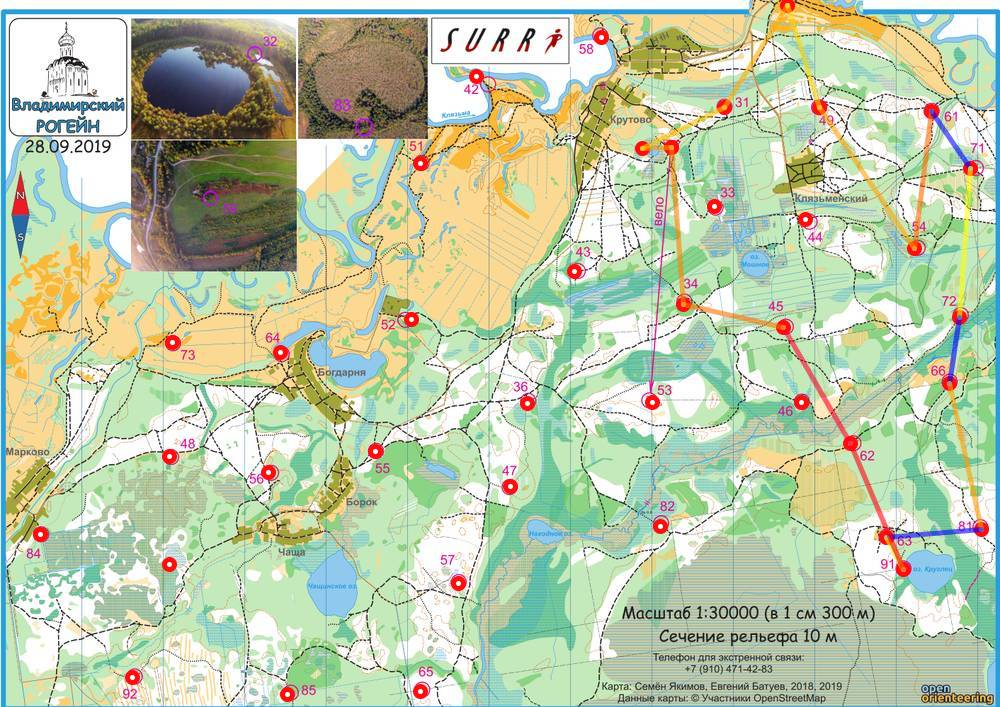

| Команда | RM-1902 |
| Номер | 71 |
| Участники | Димитров Борис 1968 |
| Группа | м4 |
| Место | 7 |
| Очки | 82 |
| Штраф | 0 |
| Время | 03:56:07 |
| Результат | 82 |
| КП | Время | Сплит | Расстояние, км | Темп, мин/км |
|---|---|---|---|---|
| С | 12:00:00 | |||
| 32 | 12:03:00 | 00:03:00 | 0.346 | 8.7 |
| 31 | 12:11:30 | 00:08:30 | 1.111 | 7.6 |
| 59 | 12:23:32 | 00:12:02 | 1.473 | 8.2 |
| 49 | 12:33:01 | 00:09:29 | 1.309 | 7.2 |
| 54 | 12:50:29 | 00:17:28 | 2.084 | 8.4 |
| 61 | 13:06:58 | 00:16:29 | 1.687 | 9.8 |
| 71 | 20:38:15 | 4591:31:17 | 0.844 | >999 |
| 72 | 13:38:38 | -4591:00:23 | 1.819 | <1 |
| 66 | 13:59:00 | 00:20:22 | 0.823 | 24.8 |
| 81 | 14:14:26 | 00:15:26 | 1.815 | 8.5 |
| 63 | 20:38:06 | 4590:23:40 | 1.176 | >999 |
| 91 | 14:36:49 | -4591:58:43 | 0.446 | <1 |
| 62 | 14:59:33 | 00:22:44 | 1.672 | 13.6 |
| 45 | 15:26:27 | 00:26:54 | 1.639 | 16.4 |
| 34 | 15:38:27 | 00:12:00 | 1.246 | 9.6 |
| Ф | 15:56:07 | 00:17:40 | 1.927 | 9.2 |
| 03:56:07 | 19.152 км | 12.3 мин/км |
